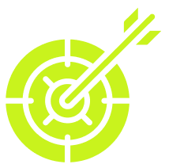
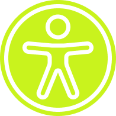

O que você vai aprender

Direção clara
Descubra o que estudar primeiro,
sem perder tempo pulando de
curso em curso.
Escolha de área
Entenda se você tem mais perfil
para Frontend, Backend, Mobile
ou Dados.
Espaço para dúvidas
Aqui você pode perguntar sem medo
e receber respostas humanas e
diretas.
Responsividade
Como adaptar seu site para o
mobile.

SEO e Acessibilidade
Descubra como a acessibilidade está diretamente relacionada ao SEO.
SEO Off-Page e Link Building
Aumente a autoridade do seu site
com estratégias de backlinks.